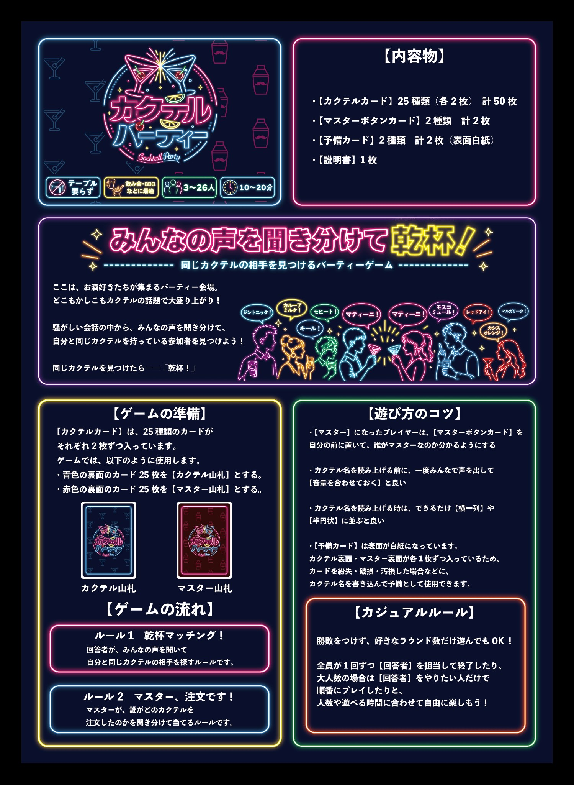
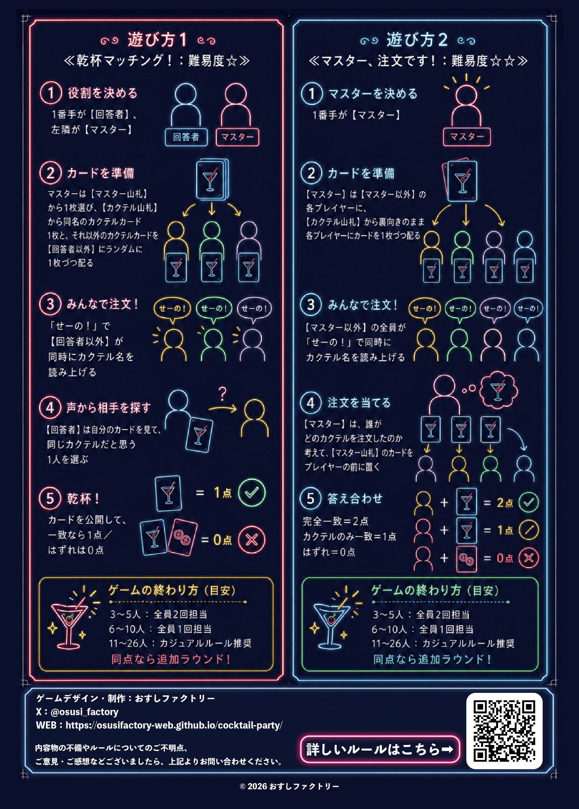

遊び方1｜乾杯マッチング！
回答者が、みんなの声を聞いて同じカクテルの相手を探すルールです。はじめて遊ぶ方におすすめ。
はじめて遊ぶ方は、動画を見ながら確認するのがおすすめです。2つの遊び方をそれぞれ紹介しています。
回答者が、みんなの声を聞いて同じカクテルの相手を探すルールです。はじめて遊ぶ方におすすめ。
マスターが、誰がどのカクテルを注文したかを聞き分けて当てるルールです。少し慣れてきた方におすすめ。
ここは、お酒好きたちが集まるパーティー会場。どこもかしこもカクテルの話題で大盛り上がり！
騒がしい会話の中から、みんなの声を聞き分けて、自分と同じカクテルを持っている参加者を見つけましょう。
同じカクテルを見つけたら――「乾杯！」
詳しい手順は同封の説明書にも記載しています。ここでは流れを確認できます。
1番手が回答者、左隣がマスターになります。
マスターは回答者用のカードと、参加者へ配るカードを準備します。
回答者以外が同時にカクテル名を読み上げます。
回答者は自分のカードを確認し、同じカクテルだと思う1人を選びます。
カードを公開して、一致なら1点。はずれは0点です。
1番手がマスターになります。
マスター以外の各プレイヤーに、裏向きでカードを1枚ずつ配ります。
マスター以外の全員が同時にカクテル名を読み上げます。
マスターは誰がどのカクテルを注文したのかを聞き分けます。
完全一致で2点、カクテルのみ一致で1点、はずれは0点です。
画像をタップすると大きく表示できます。

説明書 オモテ

説明書 ウラ
遊べます。カクテルをテーマにしたゲームですが、実際にお酒を飲む必要はありません。
遊べます。カードを確認できるスペースがあれば、立ったままでも遊べます。
初めての場合は「乾杯マッチング！」からがおすすめです。
少人数でも遊べますが、人数が増えるほど聞き分けがにぎやかになります。時間に合わせてラウンド数を調整してください。
XまたはWebサイトからお問い合わせください。必要に応じてFAQへ追記します。
おすしファクトリーのX・Webサイトをご確認ください。